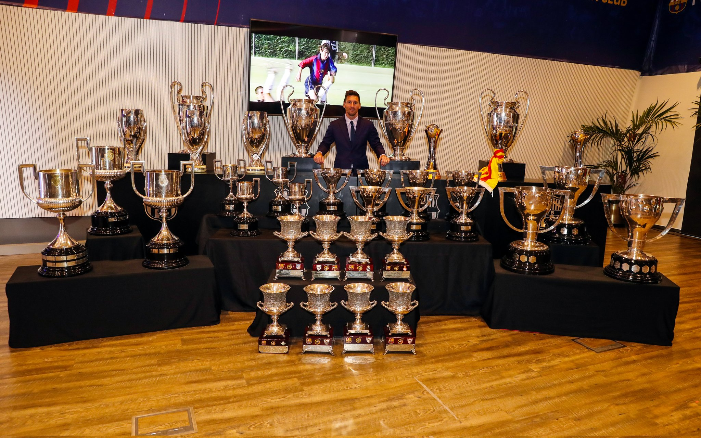
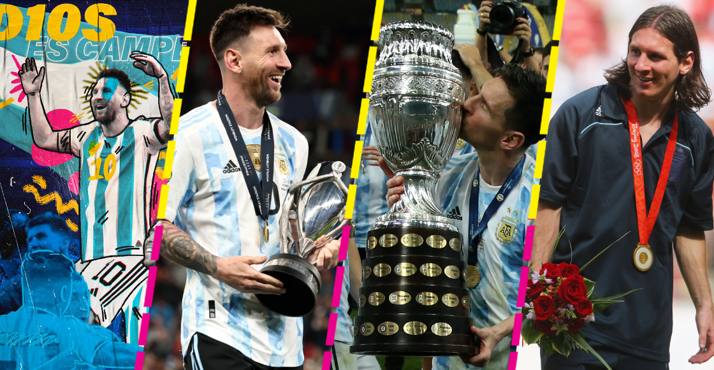

Pincha aquí para ir a la página principal
Messi ha ganado un total de 44 trofeos
Con el Barça:
4 Champions, 10 Ligas, 7 Copas del Rey, 3 Mundiales de Clubes, 3 Supercopas de Europa, 8 Supercopas de España

Con Argentina:
2 Copas América, 1 Mundial Sub 20, Medalla de Oro en los JJOO, 1 Mundial, 1 Finalissima

Goles de Lionel Messi por equipo:
- Real Madrid: 26 goles
- Sevilla: 38 goles
- Atlético de Madrid: 32 goles
- Valencia: 31 goles
- Athletic Club: 29 goles
- Espanyol: 25 goles
- Levante: 23 goles
- Arsenal: 9 goles
- Bayern Múnich: 4 goles
- Manchester United: 4 goles
- Brasil (Selección): 5 goles
- Uruguay (Selección): 7 goles